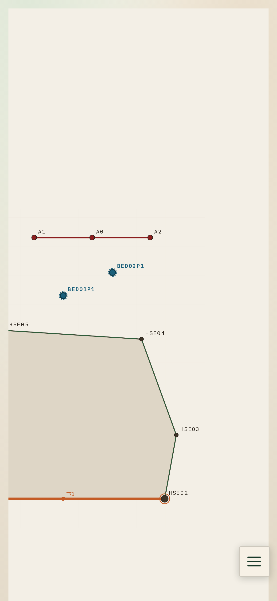

One list. The plan and the menu stay usable behind it.
Landscape, 1×. Both ends, and CRC01 to CRC05.
Photo 1. Both ends, and CRC01 to CRC05. CRC06 does not fit.
Photo 2. Turn. Keep BAS02. Add CRC06. Do not step.
On the pole. Lens over the middle, then bubble.
Ticks itself when the STN01 photo is verified.
All 12 steps ticked. Saved on this phone.
Paused on Wrap the sleeve. Step 5 of 7. Resume keeps this place.